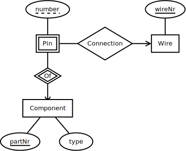

Databases (TDA357/DIT621)
Remote Exam on 8 June 2020 at 14:00-18:00
Department of Computer Science and Engineering, Chalmers University of Technology & University of Gothenburg.
Examiner: Thomas Hallgren, will be answering questions via email, Inbox in Canvas, or Zoom.
Results: Will be published within three weeks from the exam date.
Maximum number of points: 60.
Grade limits for Chalmers: 24p for 3, 36p for 4, 48p for 5.
Grade limits for GU: 24p for G, 42p for VG.
Help material: this is a remote exam, you can use any help material.
Instructions
You can answer in English or Swedish.
Indicate clearly if you make any assumptions that are not given in the question. In particular: in SQL questions, use standard SQL or PostgreSQL. If you use any other variant (such as Oracle or MySQL), say this; but full points are not guaranteed since this may change the nature of the question.
Submitting answers
The exam is made available as an assignment in Canvas and you should submit your answers in Canvas. Write your answers in files that you upload.
If you write the answers on your computer: submit them in
.txt,.sql,.pdf,pngor.docxfiles.If you use pen and paper: scan your answers or take photos of them and submit them as
.pdfor.jpgfiles. Take photos in good light, and if possible, use an app that has a document scanning mode (e.g. the Notes app in iOS) to straighten the photos and adjust the brightness.Clearly mark the answer to each question so that they are easy to find.
You can write all answers in one file, or put the answer to each question in a separate file. If you submit many files, include the question number in the file name, e.g. Q1.pdf, Q2.txt, Q3.txt, etc.
You can submit multiple times, but only the last submission will be graded.
1 Entity-Relationship Modelling (10p)
1.1 E-R diagram (6p)
Draw an E-R diagram that describes the high-level design of the database a business might use to keep track of its products, customers and the orders customers place. The domain description is as follows:
A customer has a name, an address and an email. Each customer is also assigned a unique customer number.
Some customers are loyal customers. Loyal customers get a discount on everything they order. (The discount is usually between 10% and 40%. There might be other benefits in the future.)
A product has a description and a unit price. Each product is also assigned a unique product number.
An order is made by a certain customer on a certain date. Each order is also assigned a unique order number.
An order also contains a number of order lines. Each order line identifies a product and specifies the quantity that has been ordered of that product. The expectation is that different order lines refer to different products.
(The value of an order can be computed by summing up the unit price multiplied by the ordered quantity for each product in the order, then applying the discount, if the customer is a loyal customer.)
Note: domain descriptions often are a bit vague. If you need to make any assumptions, write them down in your answer. Also, some of the information included in the domain description may only be useful at a later stage in the database design process.
1.2 From E-R model to database schema (4p)
Translate this E-R diagram into a relational schema, including keys and constraints.

2 Relational Modelling and Functional Dependencies (8p)
Consider the following table of benchmark results:
| date | hostname | hardware | os | benchmark | result |
|---|---|---|---|---|---|
| 2019-03-15 | ed-3507-03 | Dell Precision Tower 3620 | RedHat 7.5 | Gb4 Single | 5597 |
| 2019-03-15 | ed-3507-03 | Dell Precision Tower 3620 | RedHat 7.5 | Gb4 Multi | 16559 |
| 2018-08-20 | mbp2 | MacBook Pro 15" (Late 2013) | macOS 10.13.6 | Gb4 Single | 3787 |
| 2018-08-20 | mbp2 | MacBook Pro 15" (Late 2013) | macOS 10.13.6 | Gb4 Multi | 13104 |
| 2017-04-04 | mbp2 | MacBook Pro 15" (Late 2013) | Debian 8.7 | Gb4 Single | 3841 |
| 2017-04-04 | mbp2 | MacBook Pro 15" (Late 2013) | Debian 8.7 | Gb4 Multi | 11589 |
| 2017-04-04 | mini1 | Mac mini (Late 2014) | macOS 10.12.4 | Gb4 Single | 3739 |
| 2017-04-04 | mini1 | Mac mini (Late 2014) | macOS 10.12.4 | Gb4 Multi | 7192 |
| 2016-11-06 | iphone7 | iPhone 7 Plus (32GB) | iOS 10.2 | Gb4 Single | 3470 |
| 2016-11-06 | iphone7 | iPhone 7 Plus (32GB) | iOS 10.2 | Gb4 Multi | 5629 |
There is some redundant information in the above table, as evidenced by the repeated values in some of the columns, which suggests that it might be desirable to split up the information into smaller tables.
2.1 Functional Dependencies (3p)
What are the functional dependencies? What are the candidate keys?
Consider that
- The
dateindicates when a benchmark result was obtained, but the result would presumably be the same if the benchmark was run on another day. It is included for documentation, and to allow the results to be sorted by date. - The
hostnameattribute uniquely identifies a host (a computing device). - The
hardwareattribute is an incomplete specification of the hardware. For example, there are different variants of the Mac mini (Late 2014), so it is possible that at some point amini2with different benchmark results is added to the table, even thoughmini2is also a Mac mini (Late 2014). - The
osandbenchmarkattributes uniquely identify an operating system and a benchmark, respectively.
2.2 Multi-valued dependencies (2p)
Are there any multivalued dependencies? If so, give an example.
2.3 Decomposition (3p)
Give a practical decomposition of the table above. It should reduce the redundancies and make it easier to add new hosts and benchmark results, and it should be possible to reconstruct the original big table from the smaller tables.
You should show the relational schemas for the new tables (including the keys), but you do not need to show the contents of the new tables.
3 SQL queries (12p)
Below is the schema for an hypothetical database with information on software developers and the software projects they contribute to.
Projects(name, owner)
owner -> Developers(alias)
Contributions(developer, date, project, language)
developer -> Developers(alias)
project -> Projects(name)
- Each developer has a unique alias, a real name and comes from a country.
- Each project has a unique name and is owned by a developer.
- A contribution to a project is made by a developer on a certain date. A contribution consists of source code written in a particular programming language.
3.1 (2p)
Write an SQL query that lists the real names of all developers from Sweden.
3.2 (3p)
Write a query that for each project lists its name, owner alias owner real name and country.
The result might look like this:
| name | owner | realname | country |
|---|---|---|---|
| Emacs | rms | Richard Stallman | USA |
| Linux | torvalds | Linus Torvalds | Finland |
| Fudgets | hallgren | Thomas Hallgren | Sweden |
| WebFudgets | hallgren | Thomas Hallgren | Sweden |
| GF | ranta | Aarne Ranta | Finland |
Disclaimer: any similarity with real people and real projects is purely coincidental.
3.3 (3p)
Write an SQL query that lists the most popular programming languages based how many developers have made contributions in each language. The output should be ordered with the most popular language first.
The result might look like this:
| language | popularity |
|---|---|
| Haskell | 50 |
| C | 30 |
| Java | 25 |
| Lisp | 7 |
3.4 (4p)
Let’s consider a project international if it has contributions by developers that come from other countries than the owner of the project. The more countries a project has contributions from, the more international it is.
Write an SQL query that lists international projects. The output should contain the name of each international project and the number of other countries it has contributions from, ordered with the most international projects first.
The result might look like this:
| name | count |
|---|---|
| Linux | 58 |
| Emacs | 35 |
| GF | 23 |
| Fudgets | 7 |
4 Algebra and theory (8p)
4.1 (5p)
Consider again the database schema from question 3 and the following relational algebra query:
γproject,COUNT(developer)
δ (πproject,developer Contributions)
Explain what this query computes (2p) and write an SQL query that computes the same result (3p).
4.2 (3p)
In this question we consider a database that contains a relation Countries(name,capital,…).
SQL allows queries that contain subqueries in the WHERE clause, like in this example:
Queries like this have no direct translation to relational algebra and may not be supported by all SQL implementations. How would you rewrite it into an SQL query that computes the same result but does not contain any subqueries?
5 Constraints, Indexes, Views and Triggers (12p)
Consider again the database schema from question 3.
5.1 Primary keys and references (3p)
Write down the CREATE TABLE statements for the Contributions relation.
- All attributes should have type
TEXTexcept thedateattribute, which should have typeDATE. - Make sure you include the primary key and the referential constraints.
- The convention in relational schemas is that
NULLvalues are not allowed unless explicitly stated (by adding(or Null)after the name of an attribute). Make sure this is reflected in yourCREATE TABLEstatement.
5.2 Indexes (2p)
Over time, the number of developers and the number of contributions in the database may grow very large. We might still want to find all contributions by a particular developer quickly. Write an SQL statement that adds an index to the Contributions table to facilitate this.
5.3 Views (3p)
Suppose an extra table is added to the database to keep track of which contributions are bug fixes, and how severe the bugs are.
(developer,date) -> Contributions.(developer,date)
Write the CREATE VIEW statement for a view ContributionsAndBugFixes that provides a combined view of the Contributions and the BugFixes tables, i.e. the view has all the rows and columns from the Contributions table, plus the severity column from the BugFixes table. For contributions that are not bug fixes, the value in the severity column should be NULL.
5.4 Triggers (4p)
Write a trigger that allows contributions and bug fixes to be inserted directly in the ContributionsAndBugFixes view introduced in the previous question. If the severity column in the new contribution is NULL, the contribution is not a bug fix and it should be inserted in the Contributions table only. If the severity columns is not NULL the contribution should be inserted in both the Contributions table and the BugFixes table.
6 Semi-structured data (10p)
Consider again the database schema from question 3.
6.1 (5p)
Write an SQL query that creates one big JSON document containing information about all developers. Specifically, the document should be an array that for each developer contains an object with
- the alias,
- real name,
- country and
- an array with information about the projects that the developer has contributed to. For each project there should be an object containing
- the name of the project and
- the number of contributions the developer has made to that project.
Hint: the functions jsonb_agg and jsonb_build_object will probably be useful.
6.2 (5p)
Write down the JSON Schema for the document you created in 6.1.
The schema should contain enough details about the structure of the JSON document so that if you validate the document you created in 6.1 against the schema you will detect if there is a problem with it, e.g. if the document has the wrong structure, contains the wrong type of information or if some information is missing.